Rigid link connectors
Creating rigid links
In a frame model, rigid links transfer forces between two beams or between a beam and a plate, for example. Rigid links are required to connect disjoint beams in a structural study (linear static, linear buckling, normal modes, or harmonic response) of a frame assembly.
The Manual and Auto rigid link connector commands are not available in thermal studies, as rigid links do not participate in the transfer of thermal loads.
-
You can add rigid links automatically when the study is created.
-
You can add rigid links automatically by selecting the Auto
 command.
command. -
You can add individual rigid links manually using the Manual
 command.
command.
For this linear static study of a frame model with a beam mesh type,
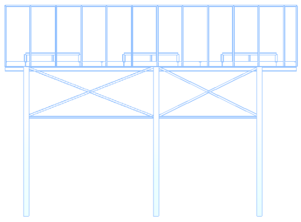
the top and side views show the beam study inputs: a total force load, fixed constraints, and automatically generated rigid link beam connectors (identified by magenta circles):
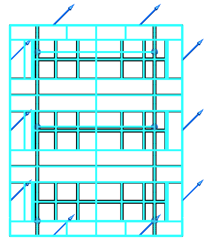
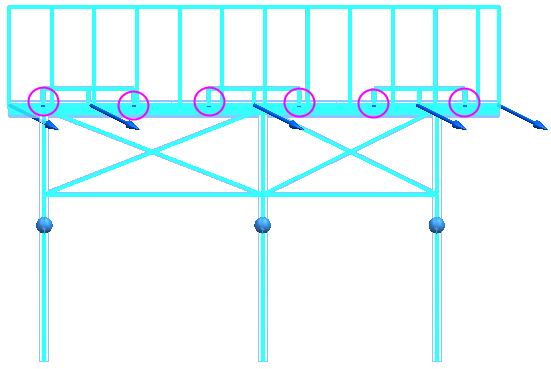
Dynamic analysis studies (harmonic response and normal modes studies) do not require the model to be fully constrained to solve. However, the results are not as reliable as the results from a determinate linear static study.
If you create both a harmonic response study (or a normal modes study) and a linear static study for the beam model, the model must be fully constrained.
Automatic beam connectors in frame models
When you create a simulation study for a structural frame model and select the frame geometry, beam curves are extracted from the intersections of beam paths, and rigid links are applied automatically where needed.
-
Beam curves (light blue)
-
Rigid links (dark blue)
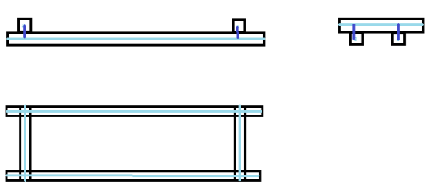
Each rigid link is a two-point connection between two beam curves:
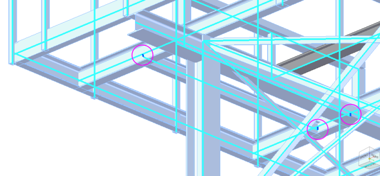
You can create rigid links automatically in your frame assembly using either of these methods:
-
When you create a new study for a beam model, you can specify that you want Solid Edge Simulation to automatically create all the rigid link connectors between beam curves. You do this in the Create Study dialog box, in the Connector Options section, by selecting the Maximum rigid link length check box.
The default Maximum rigid link length value that is displayed is equal to the length of the largest beam cross-section for coplanar beams.
Note:When creating rigid links automatically, either when the study is created or using the Auto command, we recommend that you use the default value for Maximum rigid link length. This value is based on the beams used in your frame model. In most cases, it should result in a fully constrained model. For more information, see Adjusting the maximum rigid link length to constrain the model.
-
For an existing beam study, you can select the Simulation tab→Rigid Links group→Auto command
, and then select and accept all the components. Example: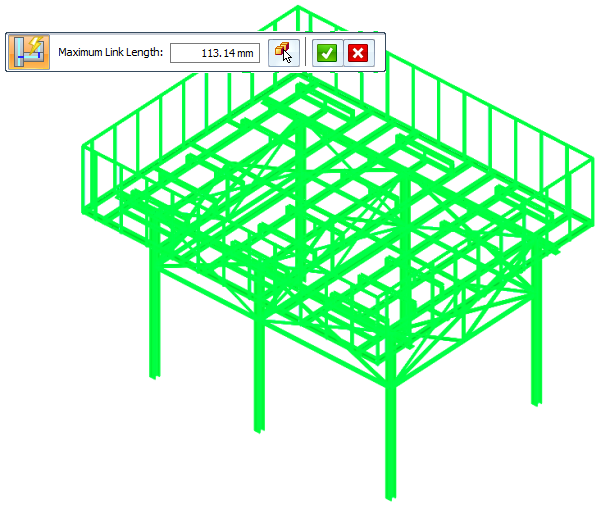
Adjusting the maximum rigid link length to constrain the model
Rigid link creation should be followed by validating whether the model is fully constrained.
When generating rigid links automatically, either when the study is created or using the Auto command, we recommend that you use the default value for Maximum rigid link length. This value is based on the beams in your frame model, and is equal to the length of the largest beam cross-section for coplanar beams. In most cases, it should result in a fully constrained model.
-
If your model is fully constrained using the default maximum rigid link length value, do not change the default value. Increasing the default value may create unwanted rigid links.
-
If using the default value does not result in a fully constrained model, then increase the value by two to three times the current value, and then check whether the model is completely constrained or not. Continuing to increase the value may lead to unwanted rigid link creation.
-
If you do not get a completely constrained model after increasing the default value by two to three times, then use the methods below to determine where connectors are needed,
There are two ways to check if the model is completely constrained before you try to solve the study.
-
Visually inspect the model to check for missing rigid links.
-
Create and solve a Normal Modes study for the model. When you review the results of the normal modes analysis, use the Animate command to show the disconnected beam curves with respect to the model. For more information, see Animate simulation results.
To add the missing rigid link connectors between the disconnected beam curves identified by visual inspection or through normal modes analysis, use the Manual Rigid Link command to create individual rigid links, until the model is completely constrained.
Manual rigid link connectors in frame models
Automatic link creation does not consider all instances where beam paths do not intersect (disjoint beam curves). For example, when members are trimmed or when they have different cross sections, the nodes of members associated with a joint may not coincide. This can result in an under-constrained study.
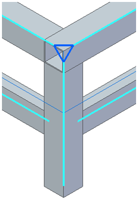
To eliminate under-constrained geometry errors and solve the study, you can create
rigid links manually between disjoint beams using the Simulation tab→Rigid Links group→Manual command .
You also can use the manual method to create rigid link connectors between two beams when you replace beams in your model.
To learn how to use the Manual command, see Define rigid links manually.
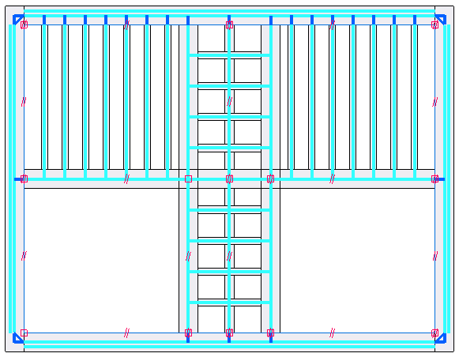
Modifying rigid link connectors
The Rigid Links node in the Simulation study navigator pane lists all automatically and manually created links. Rigid link connectors are selectable in QuickPick.
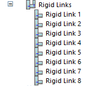
You can highlight and select individual rigid links on the model, and then use shortcut commands in the Simulation pane to Delete or Rename rigid links.
To select a rigid link on the model:
-
In the Simulation pane, click an individual rigid link node to see it highlight on the model.
-
Zoom in and hover over the highlighted link.
-
When the QuickPick indicator is displayed, right-click to display the QuickPick list, and then select the rigid link from the list.
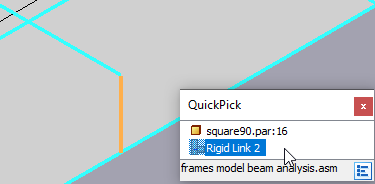
Updating legacy beam studies
When you open a beam study of a frame model, notice that rigid links that were generated previously by the Auto command are displayed in the Simulation pane.
To take advantage of the enhanced rigid link creation algorithm, you can do either of the following:
-
Create a new study using the automatic link creation method.
-
Delete the legacy rigid links in your existing study and recreate them using the Auto command.
For example, this type of rigid link between intersecting, extended beam curves is not required and is no longer created by the Auto command:
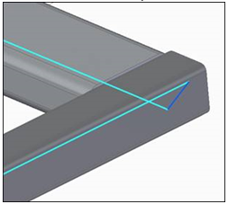